本教程介绍了在离子对列表不是由Skyline创建的情况下，如何处理基于此列表进行的选择反应监测实验（简称 SRM；亦称为多重反应监测，简称 MRM）数据。本教程还介绍了如何使用 Skyline 处理加入了同位素标记内标肽段的定量实验数据。
本教程将处理工具 MRMer1 发表时采用的数据，还将处理由 Addona 及其合作研究者2开展的跨实验室研究（以下简称“Study 7”）所获取的数据。Study 7 是美国国家癌症研究所 (NCI) 支持的癌症临床蛋白质组学技术评估 (CPTAC) 的一部分。在 Study 7 计划中，CPTAC 验证工作组优先采用 Skyline 作为跨实验室大规模研究的工具。因此，研究计划累积的数据为Skyline提供了完善的测试，确保Skyline能支持验证工作组正在进行的实验类型。
即使缺少非Skyline创建的离子对列表，您仍然可以了解Skyline处理含同位素标记肽段作为内标的LC-MRM 实验数据的特点。特别是，如果您想以极高的可信度鉴定肽段的色谱峰并进行量化、匹配参照肽段，Skyline提供了良好的支持，能够帮助您实现这些目标。
开始本教程之前，请下载下面的 ZIP 文件：
https://skyline.ms/tutorials/ExistingQuant.zip
将文件解压到您电脑上的某个文件夹，比如：
C:\Users\brendanx\Documents
该操作将创建一个新文件夹：
C:\Users\brendanx\Documents\ExistingQuant
如果您在开始学习本教程之前就一直在用 Skyline，最好将 Skyline 恢复为默认设置。要执行此操作：

该 Skyline 实例中的文档设置现已重置为默认值。
由于本教程涵盖蛋白质组主题，因此您可以执行以下操作来选择蛋白质组界面：

Skyline 将在蛋白质组模式下运行，Skyline 窗口的右上角随之显示蛋白质图标 。
。
导入现有离子对列表之前，您应当尽可能多地向 Skyline 提供关于离子对列表设计和数据采集实验方面的背景信息。要做到这一点，您可以在导入离子对列表之前，尝试调整文档的设定值。
本教程开始时，首先要查看名为 MRMer1（其发音如英文单词的 “murmur”）的 MRM 分析软件工具提供的数据集。MRMer 是 Skyline 的早期版本，它用于查看和整合 MRM 色谱图，其数据集最初于 2008 年从其网页下载。在 MRMer 数据集中，所有肽段均来自于酵母，并且在国家标准与技术研究所 (NIST) 提供的谱图库中有 MS/MS 谱图。这就意味着可以通过谱图库和背景蛋白质组，非常容易地向 Skyline 提供实验中所监测肽段的相关信息。“靶向方法编辑”教程详细介绍了创建谱图库和背景蛋白质组文件的方法。在本教程中，您将使用已经准备好的文件，这些文件已被压缩至完成本教程所需的最小信息量，以便尽可能快速地下载 ZIP 文件。
要设置 MRMer 文档的谱图库，请执行以下步骤：
肽段设置表单将显示如下：

要设置 MRMer 文档的背景蛋白质组，请执行以下步骤：
肽段设置表单现在应显示如下：

最后，在将来自 MRMer 实验的离子对列表导入当前文档之前，您还需要定义所包含肽段的同位素修饰。MRMer 实验包括未标记的轻肽段和对应的重肽段，后者使用细胞培养的稳定同位素氨基酸标记 (SILAC) 方法对赖氨酸和精氨酸进行了标记。如果导入离子对列表前没有指定正确的同位素修饰，Skyline 将无法识别出离子对列表中重链肽的质荷比值。
要在 Skyline 文档设置中指定 SILAC 标记，请执行下列步骤：
此时编辑同位素修饰窗口应显示如下：

执行以下步骤以添加第二个同位素修饰：
自动选中 13C 和 15N 复选框，以告知 Skyline 对精氨酸分子中的所有碳原子使用 13C，对所有氮原子使用 15N，总质量偏移为 10 Da (6x 13C + 4x 15N)。
此时编辑同位素修饰窗口应显示如下：

Skyline 自动计算单一同位素质量和平均质量偏移，如图，赖氨酸 (K) 质量偏移约为 8 Da，精氨酸 (R) 约为 10 Da，这是由于在这些氨基酸残基中使用了 13 C 和 15 N。
您还需执行以下操作以完成MRMer离子对列表导入当前文档的准备工作：
此时会在 Skyline 窗口右侧看到一个空白谱图。现在您已经为插入 MRMer 离子对列表做好了准备。
将离子对列表插入 Skyline 的方法有两种：
对于 MRMer 数据集，可使用第一种方法。对于 Study 7 数据集，可使用第二种方法。如果您的文档包括背景蛋白质组，应采用第一种方法，即插入表单，其优势在于可以将肽段与包含这些肽段的蛋白质自动关联。Skyline 当前仅支持肽段在背景蛋白质组中对应单一蛋白质的情况，未来版本将能够处理一个肽段对应多个蛋白质的情况。MRMer离子对列表里面有两条肽段对应到了多个蛋白质，在本教程中已被删除。
如要向当前文档添加肽段的离子对列表，请执行下列步骤：
随即会显示插入离子对列表表单：

此操作将打开导入离子对列表：标识列表单，如下所示：

这样可以指示 Skyline 将肽段序列与在背景蛋白质组文件中找到的蛋白质进行匹配，来创建“蛋白质名称”列。
请注意，即便所复制的数据没有列标题，Skyline 也能够推断肽段序列、母离子质荷比和子离子质荷比列的同一性。如果您出于某种原因想要更改这些列的标识方式，每列都为此目的而提供了相应的下拉列表。
要向 Skyline 文档中插入这些肽段：
Skyline 主窗口将显示若干按照从属蛋白质分组的肽段。肽段图标的右下角应包含 3 条垂直线和一条基线 ()，类似于非常小的 MS/MS 谱图 ( )。出现此图标表明肽段具有对应的
MS/MS 库谱图。标记肽段 C-末端赖氨酸或精氨酸以蓝色突出显示，标明稳定同位素标记的重链形式的氨基酸：
)。出现此图标表明肽段具有对应的
MS/MS 库谱图。标记肽段 C-末端赖氨酸或精氨酸以蓝色突出显示，标明稳定同位素标记的重链形式的氨基酸：

您还可以在窗口右下角的状态栏中看到指示符 “1/296 tran”，表明 MRMer 离子对列表中的所有 296 个离子对已添加到此文档中。在状态栏的左侧，您可以看到此文档包含 24 个蛋白质、44 个肽段和 88 个母离子，其中每个肽段对应 2 个母离子。
如要进一步查看在此文档中的母离子和离子对，请执行以下操作：
注意：要进一步查看所有库匹配图形：
花点时间在肽段视图中选择单个肽段和离子对。检查这些离子对以及它们的子离子峰在 MS/MS 库谱图中是如何按照强度大小排名。在肽段树形视图选择不同的肽段，则 MS/MS 谱图也会同步更新，显示出与当前肽段匹配的谱图。同时，与已选离子对相匹配的谱峰还会以红色突出显示：

您会注意到，并非所有的肽段都选择了丰度最高的子离子作为离子对，正如上图显示的那样。同时，并非所有的谱图都有良好的碎片离子匹配。
如未看到 b- 离子或者突出显示的双电荷碎片离子，您可以这样选择菜单以使 Skyline 将其显示出来：
您可能已经注意到 Skyline 对于轻母离子和重母离子都显示相同的谱图。此谱图库可能仅包含轻母离子的谱图，然而，即使此库包含轻母离子和重母离子的匹配谱图，Skyline 也仅使用其中一个（默认为标准），以避免两个 MS/MS 谱图之间碎片离子出现信号强度排序的差异。如果此库中仅包含匹配肽段的重型、已标记形式的谱图，Skyline 将使用该图谱对轻和重母离子的离子对排名。
当然，之所以从现有离子对列表创建 Skyline 文档，最值得注意的原因是我们想利用 Skyline 检查在三重四级杆 MS 仪器（使用原始的离子对列表）上采集的数据。
| 注意：自首次编写本教程以来，创建扩展的离子对列表（有时称为“试验库”）已很常见，它也可以按照类似的方式被导入到 Skyline 中，用于分析数据独立采集 (DIA) 实验。此方法将另行介绍。 |
如要将 MRMer公布的数据导入到您已创建好的文档中，请执行下列步骤：
Skyline 开始把文件导入高性能数据文件，这样所需要的磁盘空间少得多，并且能够让 Skyline 从中非常快地检索所需信息。Skyline 窗口底部的图和状态栏显示进度。
导入完成后，在积分边界之间（以黑色虚线显示）测出信号的离子对，将会有绿点添加到离子对图标的左侧。对于在已选色谱峰组中不能找到峰的离子对，会显示红点。如果母离子仅含有绿色圆圈的离子对，此母离子和肽段还将显示绿点。示例数据质量很好，所以主要看到的是绿点。
如要查看显示红点的离子对，请执行以下步骤：
执行此操作后，Skyline 应显示如下：

您还可以单击并拖动窗格之间的浅灰色分割控制条，改变分配给各窗格的比例。
如果色谱图视图像不像上图中那样放大显示，请执行以下步骤：
要进一步了解该肽段的 y3 离子未包含在所选谱峰组之内的原因：
Skyline 将发生如下变化：

如果未看到上图所示的三个离子对的色谱图，请执行以下步骤：
现在您可能会看到 y3 和 y4 离子都存在一些信号干扰，以至于它们显示出两个未完全分离的谱峰。这些很显然不是由于单个肽段造成的，因为 y7 上并不存在干扰的谱峰，而且这两个离子对之间的相对强度在两个峰中是不同的。
如果您仍然想优化该方法，则您可以下次尝试测定 y5 和 y8，因为 MS/MS 库谱图表明这两个离子具有较好的可测性。然而，如果您确实想从这些数据中得到至少一个初始定量结果，则有两种选择：
在 MacCoss实验室，我们倾向于第一种选择，是因为第二种选择需要人为确定未知干扰的信号界限，这种不确定因素会引入未知的误差。在本教程中，您可以尝试这两种选择。要给色谱图留出更多的空间，请在开始下一部分之前执行以下操作：
幸好，现在可以只将离子对标记为未定量，无需完全移除它们。这样即可将其剔除出总峰面积计算。如要从轻峰值组中移除 y3 和 y4 离子对，请执行以下步骤：
在目标视图中，您会看到 y4 文本“（比率为 0.37）”和 y3 文本“（比率为 0.59）”从轻离子对的末端消失，同时母离子比值“（总比率为 0.31）”变为“（总比率为 0.24）”。非定量离子对的文本也变为灰色，并且在色谱视图中，y4 和 y3 的线变为虚线。
母离子总面积比值是加权平均值，以内标峰面积作为权重，数学公式表示为：

移除轻峰或重峰将移除与其相匹配的离子对的色谱峰。因此，仅有一对离子对保留时，正如本研究中的 y7 所示，离子对轻峰和重峰之间的比值（此处为 0.24）将成为母离子的总面积比值。
如要通过调整峰的积分边界，以消除定量检测中的干扰，请执行下列步骤：
执行此操作后，Skyline 应显示如下：

此时，y4 和 y3 的比值分别显示为 0.31 和 0.35，y7 的比值显示为 0.23，加权平均产生的母离子总比值为 0.27。
采用两种处理干扰的不同方法，获取的两个总比值分别为 0.24 和 0.27，与 1 比 4（轻和重母离子的比例）SILAC 混合的真实值 0.25 非常接近。然而，显示存在干扰作用（EFP 肽段的 y3 和 y4）的峰面积比值更接近于 1:3，而不是 1:4。由此可看出，这种手动调整技术（第二种选择）的实际效果存在疑问，也强调了我们更倾向于移除干扰离子对（第一种选择）的原因。
对本文档中的数据的进一步分析将显示大多数肽段的比值非常接近于预期值 0.25。此外，对于具有 3 个或更多个离子对的母离子，Skyline 将显示峰面积和匹配 MS/MS 峰强度之间的点积 (dotp)。当精确匹配时，点积为1。这些数值的大部分都非常接近于 1.0。您还将看到在轻和重标准峰的峰面积之间计算出的点积比 (rdotp)，其中大多数值显示为 1 或非常接近它，表明轻和重离子对峰面积之间的相对强度非常相似。
最后，在转向本教程的第二个文档之前，您可能会注意到 2 个肽段 (K.YVDPNVLPETESLALVIDR.L 和 K.FPEPGYLEGVK.T) 的离子对为空白，而其它都具有绿色或红色圆圈。这就意味着之前导入的 mzXML 文件未包含这些离子对的数据。您可以在文本编辑器中打开 mzXML 文件，查找母离子质荷比，亲自确认母离子缺少原始离子对列表中选定的离子对。对于处理手动创建的离子对列表，或由那些比 Skyline 接受的测试与使用较少的工具创建出的离子对列表，这些异常现象是非常典型的。
在下一个章节中，您将处理跨实验室 CPTAC Study 72 的数据。该研究在 2008 年 Skyline 0.1 版首次发行之前已经由验证工作组完成。当时的实验方法是利用电子表格创建的，而产生的数据则由供应商提供的软件进行分析。
同样，首先要完成的第一项任务是从现有的离子对列表中创建 Skyline 文档。向 Skyline 中插入离子对列表的第一步是检查离子对列表，了解 Skyline 要求完成哪些设置才能识别出列表中的质荷比。如要开始这项检查，
您将看到如下所示的电子表格：
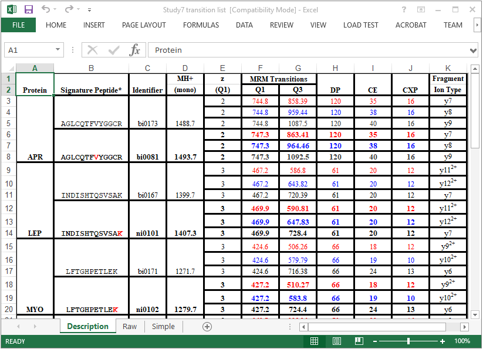
可以看出，这是由某个人手动创建的电子表格。创建时此人尽了很大努力，使用表格边界、合并单元格和突出显示，让其他人也能够清晰明了地查看这些离子对，而现在 Skyline 可以自动处理这项工作。
这个列表中的每一肽段均具有轻、重两种形式。每一个重肽的 “Signature peptide”（署名肽／代表蛋白质的特定肽段）列中，单个稳定同位素标记的氨基酸残基以红色突出显示。向下滚动整个列表，您将看到有 4 种标记方案：
这个标记方案不可能像在 MRMer 文档中那样使用全局修饰，因为部分赖氨酸和精氨酸标记的肽段内部还包括缬氨酸和亮氨酸标记。处理这种现象最简单的方式就是对C-末端赖氨酸和精氨酸指定全局修饰，正如您在 MRMer 文档中做的那样，然后再手动添加缬氨酸和亮氨酸修饰。
如要为 Study 7 离子对列表准备具有合适修饰的新文档，请执行下列步骤：
自动选中 13C 复选框，以告知 Skyline 对赖氨酸分子中的所有碳原子使用 13C，总质量偏移为 6 Da (6x 13C)。
此时编辑同位素修饰窗口应显示如下：

如要完成 Study 7 离子对列表文档准备，请执行以下步骤：
要开始向 Skyline 中添加目标离子对，请执行以下操作：
在本页面，您将看到 66 个离子对已经从原始离子对列表中导入至本研究所采用的4000 QTRAP 仪器中。但是，您应当记得 Skyline 的设置中仍缺乏信息来处理缬氨酸和亮氨酸标记肽段的重离子对。要解决此问题，请执行以下操作：
在 Excel 将显示的数据中，含缬氨酸和亮氨酸标记的3 种重母离子的 9 个离子对已从 “Raw” 选项卡中找到的66个离子对中移除。要将其余 57 个离子对添加到新 Skyline 文档中，请执行下列步骤：
这将打开导入离子对列表：标识列表单，如下所示：

Skyline 将呈现以下错误消息：

在处理 Skyline 之外创建的离子对列表时，此类消息并不少见。在本主题的 Skyline 教学视频中也可看到（ 视频 3：现有实验 ）。出现这种类型的错误最常见的原因有以下几个：
我们当前看到的错误消息由最后一种可能的原因造成（离子对列表包含了超出当前仪器设置范围的质荷比值），您会看到指示您检查离子对设置表单中的仪器选项卡的消息。
如要纠正这一问题，请执行下列步骤：
执行此操作后，Skyline 肽段视图显示如下：

8 个肽段显示加粗、蓝色的 C-末端 K 或 R，但其他 3 个缺少标记的氨基酸。这些都是需要明确标定 V 或 L 的肽段，因为通过肽段设置 - 修饰选项卡无法实现这些修饰。
如要指定第一个肽段中 V 上的同位素修饰，请执行下列步骤：
编辑同位素修饰表单如下：
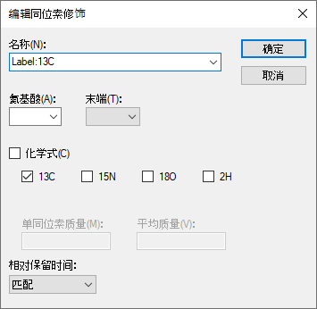
根据氨基酸所含碳原子数量，这种修饰将能够在任意氨基酸上引入相应的质量偏移。

选中肽段中的缬氨酸将不会加粗，因为此肽段尚未包含重母离子。如要添加重母离子，请执行以下步骤：
肽段视图现在将如下所示：

现在展开 “744.8398++” 母离子和“747.3481++（重）”：
验证这些离子是否包含匹配的离子对，并且是否像预期中一样相差 5 Da。
如要对剩下两个肽段创建标记的母离子，请执行下列步骤：
现已创建 Skyline 文档，该文档准确反映出原始 Study 7 离子对列表中的信息。
由于 5 个主要三重四级杆质谱仪厂商（Agilent、SCIEX、Shimadzu、Thermo 和 Waters）的支持，现在 Skyline 无需进行任何格式转换，就能完全支持导入所有仪器原始数据格式的文件。这意味着您可以从任意一个实验室直接导入 SCIEX 4000 QTRAP 检测这些离子对的原始数据，步骤如下：
Skyline 可能会花一两秒的时间读取多样品 WIFF 文件中的样品名称列表，然后它将呈现如下表单：
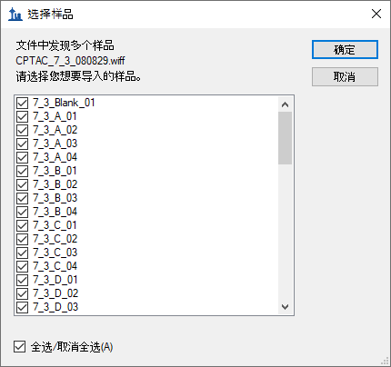
对于本教程，为了缩短导入所需的时间：
Skyline 应显示以下消息，允许您从用于显示有关这些重复测定的信息中移除在所有名称中重复的前缀 “7_3_”：
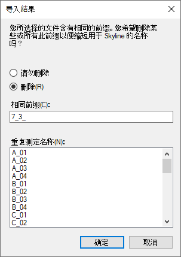
Skyline 开始将此 WIFF 文件中的数据导入其高性能数据文件 (Study 7.skyd) 中，以便进一步加快数据存取速度，并将文档中导入的所有数据压缩成单一文件以便共享。
Skyline 导入原始数据需要花费几分钟时间（不过在现代 4 核 i7 处理器上只需 11 秒），在此期间您可以开始重新调整图表视图，以达到最佳效果。如要显示并重新定位峰面积和保留时间重复检测比较视图，请执行以下操作：
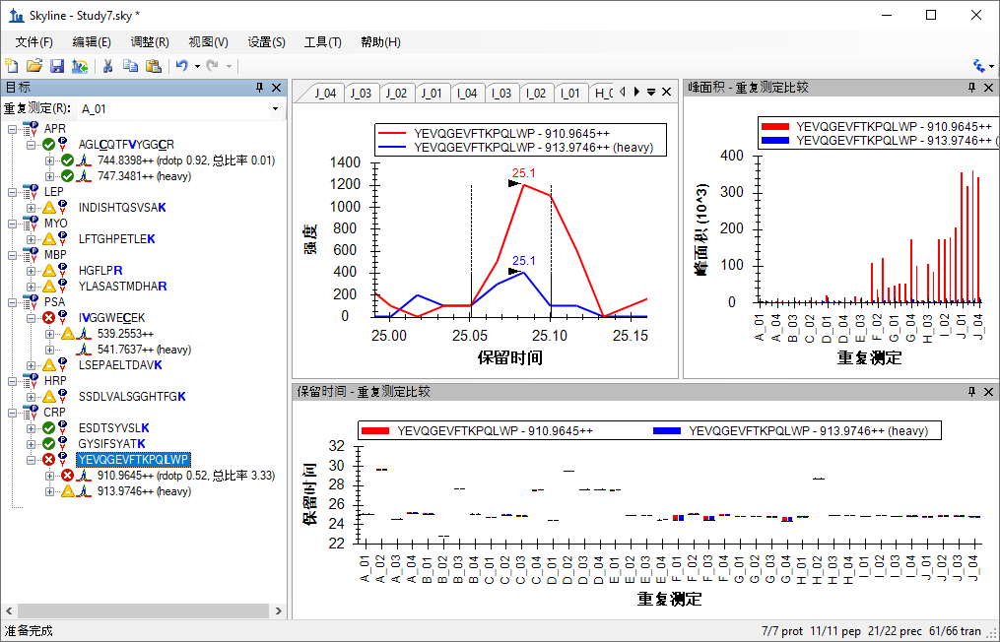
目前选择的肽段是 “YEVQGEVFTKPQLWP”（此为 CRP 蛋白质的 C- 末端肽段），事实上给 Study 7 中验证工作组的分析带来了一些麻烦。在导入数据时，您可以看到 Skyline并不总能在重复检测中得到合理的色谱峰积分。一些保留时间异常值仍然存在；因为大多数色谱峰峰值在 24.7 分钟附近，即使有一些色谱峰的保留时间只是略高于 25 分钟， 它们也不是目标肽段。一个清晰的问题是，作为内标加入的重标肽段，总是比内源轻标肽段信号强度低不少。
需要说明的是，您可以将鼠标悬停在任何一个重复实验的图表上，直到在手形光标出现，然后单击导航至相应重复检测的色谱图。您可以使用这种方法导航至每一个可能错误识别的峰值所对应的色谱图，并利用在 MRMer 文档中使用的方法（即单击并在X 轴下拖动）对其纠正。但是对于本教程而言，您可以采用此验证工作组的后期处理方式，即删除该肽段。
您将看到 Skyline 对此文档中其它肽段做了更好的色谱峰积分。但对于仅包含 10 个肽段的数据集，我们强烈建议您仔细检查每个肽段，并对明显有误之处做出手动调整。
首先，在上图中，您可以看到肽段 “IVGGWECEK” 的母离子“541.7637++（重）”似乎缺失数据。这是因为提供给质谱仪的离子对列表仅精确到母离子质荷比的一位小数点，将其错误地四舍五入为 “541.7”。您可以在 Excel 电子表格中的 “Raw” 选项卡检查这项内容。
如要正确地计算此文档中的母离子质荷比，使其与测定的数据相匹配，请执行以下步骤：
这样在“541.7637++（重）”母离子旁边会出现一个绿色圆圈。
另一个问题是，在肽段视图中有许多元素显示出橙色和红色圆圈，这表明离子对没有积分峰面积。正如在靶向方法编辑教程中讨论的那样，在优化方法时，标出这些肽段，然后进行优化是非常有用的。但是对于本教程中已经高度优化的方法，这通常不会提供相关信息。因此，可以选择对最强峰边界之间的所有离子对峰面积进行积分，并更改红点指示器以仅在离子对面积为零时显示。
如要打开这项功能，请执行以下操作：
| 注意：在Skyline 4.2中，此设置不再像之前一样影响定量计算。现在，它仅影响 Skyline 报告中“目标”视图和“峰发现率”字段中的彩色点。 |
此时 Skyline 将显示如下：
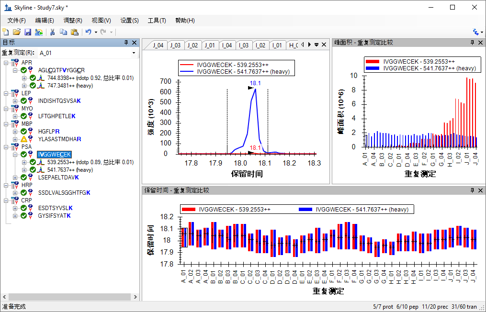
上述图像中的峰面积视图给出了 Study 7 试验清晰的全局图景。它是由各个浓度的四次技术重复检测组成的校正曲线。您会看到，重同位素标记的内标是恒定浓度的，但经过 50 多次进样后，其峰面积有所减小。在保留时间视图下，您可以看到肽段保留时间很稳定，非常适合应用于保留时间被排定的实验。
在本节中，您将专注于峰面积视图，以及其提供的许多用于检查多个重复检测数据集的选项。为了在屏幕上为峰面积视图提供更多的显示空间：
峰面积视图将脱离 Skyline 主窗口，浮动在其上方。重新调整其位置，以免遮挡目标视图。
要开始操作：
您会看到，第 1 个肽段和最后 5 个肽段会出现与上述图表类似的峰面积图表，而中间的 4 个肽段显得很不精确。
同时进样稳定同位素标记参照肽段的一个重要原因是，它们可用于对内源性未标记肽段的峰面积进行归一化，消除一些不同测定之间的差异（系统误差）。如要在峰面积视图中形象地看到这些，请执行以下操作：
选择肽段 SSDLVALSGGHTFGK，您会看到如下所示的归一化图表：
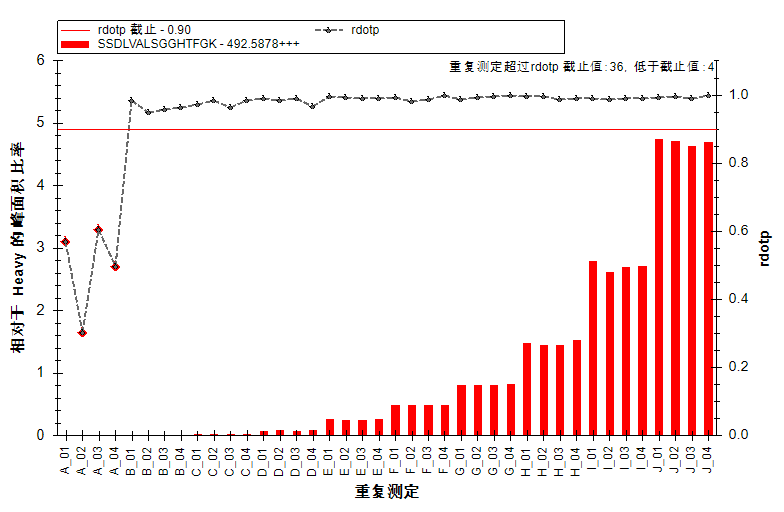
确实，您将发现每一种浓度下的重复检测所获得结果之间的精确度得到了提高。
再看下其他 4 个肽段，您将发现它们仍然未显示出预期的模式。
查看归一化图表的另一种有趣的方式是分别查看每一个离子对。在行为正常的肽段中，每一个轻离子和对应的重离子对之间的比值较为相似。如要分别复查离子对的比值，请执行以下操作：
对于 6 个行为正常的肽段，您会看到如下所示的图表（选取了 ESDTSYVSLK 肽段轻母离子 564.7746++）：

不出所料，这些比值非常相似。第二个和第三个肽段（INDISHTQSVSAK 和 LFTGHPETLEK）的图表并不是非常干净，但离子对比值中没什么问题。
峰面积图表将显示如下：

看起来 y3 的离子对中存在干扰，因为其低浓度下比值与此肽段其它离子对差异较大。
峰面积提供了另一种检查母离子中离子对相对强度的方式。现在您可以通过执行以下操作来再次查看 HGFLPR 肽段：
图表将发生如下变化：

此图表再次清晰地显示出 y3（棕色）的离子对存在干扰，随着内源性肽的浓度增加至超出 E组重复测定时的浓度，其影响变小。移动峰面积视图，以便看到色谱图，您这时可以单击各个条以查看存在干扰的峰值。本例中可以非常清楚地看到 y3 的色谱峰存在干扰（重复检测 E_03）：

与 MRMer 文档中的情况一样，您可能为了排除干扰峰而尽力调整积分界线，但删除 y3 离子对或将它作为非定量离子对或许是一种更好的办法，尤其是因为该离子对对肽段的总的峰面积贡献不大。如要深入了解这些测定结果的精确性，请执行以下操作：
峰值面积图表将发生变化：

如果该肽段未按照这个顺序出现，请执行以下操作：
当然，当前显示的母离子（以红色显示）有很大的变异系数 (CV)，没有实际意义，因为数据集包含了被分析肽段的 10 个不同浓度水平的数据。然而，重母离子（以蓝色显示）的 CV 值提供了大量的信息，因为在所有样品中其是以恒定浓度进样的。基于目前为止您所看到的，对于清晰显示预期浓度变化的 6 个肽段来说，变异系数约为 10% 或更低，这应该说十分正常。然而其他 4 个肽段的变异系数更接近于 40%，甚至 50%。
在 Skyline中仅使用几个简单的操作，您就可以了解到一个数据集的很多信息。而在此前，这些信息需要验证工作组的统计和程序人员花数周时间分析和提取。如果您已经完成了靶向方法优化教程，现在您可能在想为什么在分析预定的多次重复检测数据时要进行优化环节，这样做是为了在分析珍贵样品之前能更好地理解目标肽段在此设定下的信号响应特性。
如果 X-轴显示的是样品浓度，而不是重复检测的名称，则能更加直观的理解重复检测图表中的数据。
Skyline 针对校准曲线提供广泛内置支持，您可以在绝对定量教程中了解更多信息。现在，您只需使用内置的分析物浓度注释，即可为 Skyline 提供有关在这些重复检测中加入的肽段浓度的更多信息。
文档网格可用于此目的。要显示分析物浓度报告，请执行以下操作：
现在，文档网格应在 40 行中显示重复检测、样品类型和分析物浓度，每个样品各一行。配制样品的浓度为：
| 样品 | A | B | C | D | E | F | G | H | I | J |
| 浓度 (fmol/µL) | 0 | 60 | 175 | 513 | 1500 | 2760 | 4980 | 9060 | 16500 | 30000 |
输入这些值后，文档网格应如下所示：
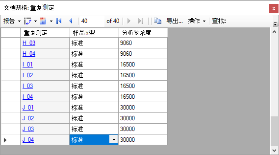
现在您可以执行以下操作，以在峰面积：重复检测比较图中使用新输入的浓度：
峰面积图表将显示如下：
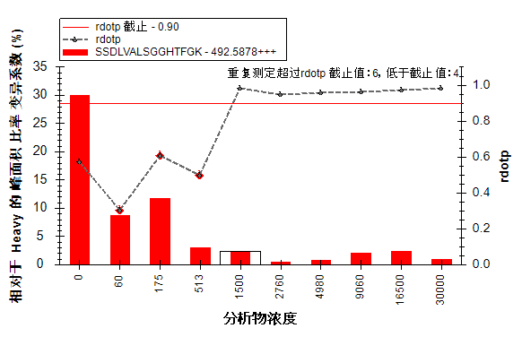
该图显示出 CV 值都非常小（最低浓度的CV值除外）。通过执行以下操作，您可以轻易切换到显示平均比值和标准偏差的图表：
视图将发生如下变化：
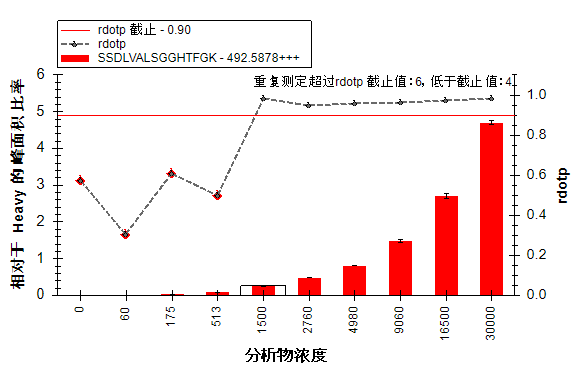
8个不同实验室参与了Study 7，并且每一个实验室均产生了与本教程中您检查的相类似的数据集。然而，并不是所有的实验室都以相同的方式遇到了相同的问题。本教程还包含此研究中来自另一实验室及其他子项目的数据。本教程中，文档已创建好，并且数据集已导入。
如要打开Study 7-II 来自编号为52的实验室的数据：
此文件会快速打开，并且您会看到重同位素标记参考肽段的 CV 值不尽相同，如下图所示：
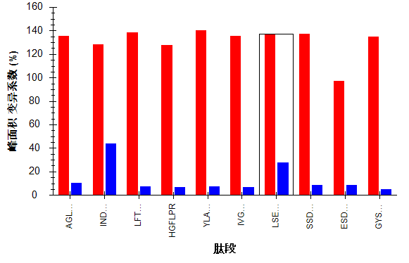
在第一组数据中，有 4 个肽段CV值偏大（40%至50%）；其中，INDISHTQSVSAK 是唯一一个在此数据集的变异系数仍然约为40%的肽段。同时， LSEPAELTDAVK 的变异系数现在约为 25%（不同于第一组数据中约10%）。
如果您查看保留时间：重复检测比较图表，会发现 Skyline 为 3 次“空白”的重复检测选择了错误的峰（尽管很久以前就已经解决了该问题，但却是在导入和保存文档数据之后）：
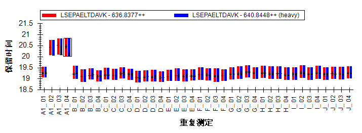
如果您通过单击并向右拖动 X 轴的方式纠正这些错误，LSEPAELTDAVK 的重母离子变异系数可以下降至类似其它大多数肽段的 10% 左右。
如要查看此数据集中的轻:重比值，请执行下列步骤：
您将发现所有肽段（甚至包括肽段 INDISHTQSVSAK）的图表，在此数据集中结果非常好。
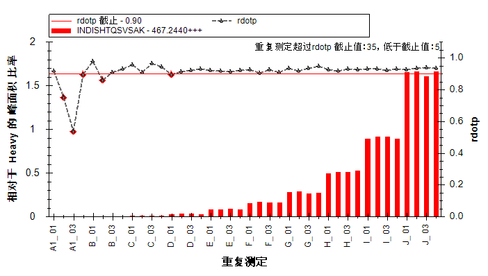
这似乎显示出内标对此肽段检测结果的差异起到了补偿作用。查看归一化前的数据：
如果不是这张图表，我们很难想象到归一化会如此有效：
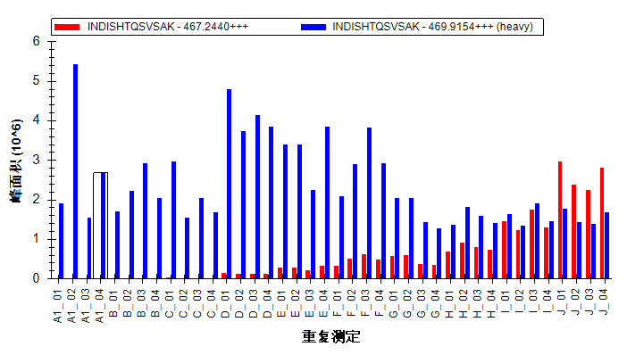
最后，回到我们在第一组数据集中发现的存在干扰的肽段上来：
在这里您会看到 y3 离子对中存在干扰的明显证据：

然而，和第一组数据集不同，在这组数据里检查此肽段色谱图来发现干扰作用显得更困难。在这种情况下，由于稍微改变了色谱条件，几乎不可能在y3的积分范围中找到此肽段两个峰，如下面所示（重复检测 E_03）：
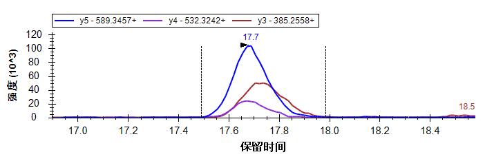
NCI CPTAC Study 7 提供了更多的数据，现在这些数据均已公开。Skyline 可以帮助您迅速批量了解这些数据，即使参与此研究的人员并不知道 Skyline 会面世。
通过本教程的学习，您了解到了，对那些事先并没有针对使用 Skyline 而设计和产生的实验数据， Skyline仍可以同样地大大简化数据分析处理的过程；这些数据可能来自于您开始使用 Skyline 之前自己进行的实验，抑或是来自于他人曾经进行的而您希望重复或回顾的实验。对于 MRMer 和 NCI CPTAC Study 7 公布的数据集，您很快从离子对列表创建好了 Skyline 文档，即使这些列表包含着相当复杂的修饰情况，还包括同位素标记内标。
通过学习您还了解到了 Skyline 的一些功能，即 Skyline 能够处理引入了同位素标记的靶向蛋白质组实验数据。从同位素标记修饰的定义到设计，Skyline简化了为这些实验创建仪器方法的工作。从精确的轻:重峰面积比值到强大的图表显示选项，Skyline 让您可以深入地了解并分析这些实验采集的数据。
1. Martin,D.B. et al. MRMer, an interactive open source and cross-platform system for data extraction and visualization of multiple reaction monitoring experiments. Mol. Cell Proteomics. 7, 2270-2278 (2008).
2. Addona,T.A. et al. Multi-site assessment of the precision and reproducibility of multiple reaction monitoring-based measurements of proteins in plasma. Nat. Biotechnol. 27, 633-641 (2009).